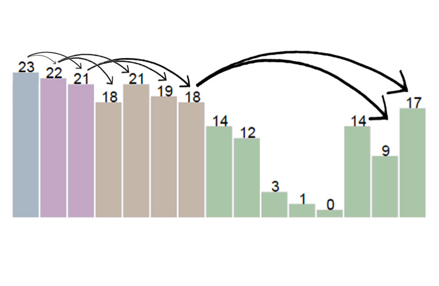

Heap Sort is a comparison-based sorting algorithm with an O(n logn ) time complexity. Before we do the actual sorting, we first create a Binary Max Heap structure to hold the data.
A Binary Max Heap is a data structure connected through parent and child nodes, where the root node (index i=0) is the maximum element of the dataset. Each node can have at most 2 children, and the only other requirement of the heap is that it is ordered in a way such that every parent’s value is greater than or equal to the value of each of its children. We can represent this parent/child relationship in an array, where every parent at index i has its children located at
j=(i*2)+1 (left child)
k=(i*2)+2 (right child)
In the visualization, when we construct the heap, we start from the bottom up, and compare each current node (green) with its left child (light blue) and right child (red). If the current node’s value is smaller than one of its children, it swaps with the child that has the largest value.
Once the heap is constructed, the set of elements is organized in the array similar to the image below. The root, 23, is the largest element (at index i=0), with it’s left child, 22, at index j=(0*2)+1=1 and right child, 21, at index k=(0*2)+2=2. Then index i=1 has a left child at index j=(1*2)+1=3 and a right child at index j=(1*2)+2=4. The heap is structured in this way throughout the entire array, and you can observe that each node’s child has a value that is indeed less than or equal to said node’s value.

After the heap is organized in this way, the sorting algorithm begins.
The maximum element at the root (orange) swaps with the last index in the array (the bottom right most element in the heap), and it is now part of the sorted portion of the array.
The element which is swapped into the root (green) then percolates down to maintain the heap structure. By percolate down, we mean that if at least one of the children of this element at the root has a value greater than its own value, it swaps with the child that has the largest value. It continues in this pattern until all of its children have values less than or equal to its own value, and its parent has a value greater than its own value.
The algorithm then begins a new iteration. The new root is the current unsorted maximum value, and it is swapped with the last unsorted element in the array (the bottom right most element in the heap). Once it is swapped, it is now in its sorted position in the heap, and the algorithm continues sorting in this fashion.
The final array will contain all elements sorted from smallest to largest value.
Color meaning:
Dark Green = current index i
Light Blue = left child at index j=(i*2)+1
Red = right child at index k=(i*2)+2
Light Green = Child to be swapped (its value is larger than the parent
Orange = Maximum element at the root to be swapped with the element in the last index of the unsorted portion
Dark Blue = Finished; in sorted position